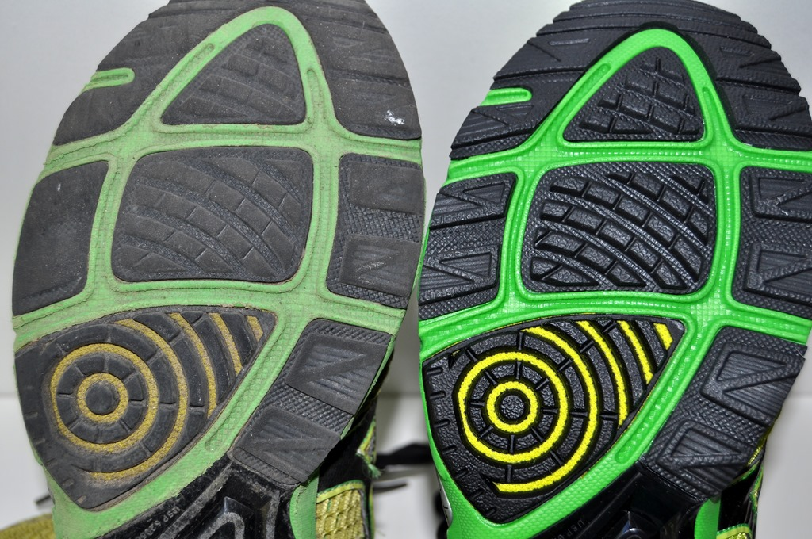

Types of Running Shoes
All kinds of different feet require all kinds of different shoe types, sizes, and brands. Here is a guide to finding what will work best for you.
- Motion Control: These shoes are typically the heaviest and most rigid. They have lots of support and cushioning which is recommended for people with flat feet, or those who run very heavily on their feet.
- Neutral: These are designed for people with a neutral or normal gait. They have an average amount of cushioning and suit anyone who is confident that they have good running form and don't need extra cushioning.
- Stability: These shoes are recommended for any runner who consistently overpronates. This means your foot tends to roll inwards subtly when running. The stability shoes help prevent this with more protection on the inside edges.
- Minimalist: These shoes try to mimic barefoot running for those who believe it is beneficial. These types of shoes are probably not for a beginner runner and not recommended by most doctors, but in the end it is your choice.
Shoe Types and Stride Problems
|
Running Shoe Type |
Severe Overpronation |
Overpronation |
Normal Pronation |
Under pronation |
Arch Type |
|
Neutral or Cushioned |
NO |
NO |
YES |
YES |
HIGH |
|
Guidance |
NO |
NO |
YES |
NO |
MID |
|
Stability |
NO |
YES |
YES |
NO |
LOW |
|
Motion Control |
YES |
YES |
NO |
NO |
FLAT |
How Long Before You Need New Shoes?
While running shoes are made to last, their most important job is to provide cushioning and grip so your form stays true and injuries are prevented. If you run on worn out shoes, it may be worse than wearing any old sneakers you found in the back of your closet.
- Mileage: A good rule of thumb is to replace your shoes every 300-400 miles, depending on running style, body weight, and surface on which you run.
- Pain: Muscle Fatigue, shin splints, or pain in knees are usually a telltale sign of worn out shoes.
- Treads: If the treads on the bottom are worn out, it is definitely time to replace them. Running shoes need traction and proper cushioning on the bottom to keep you healthy.
While new shoes may seem too expensive, once you buy a few pairs to decide what works best for you, I have found it to be very efficient to purchase 2-3 pairs at a time when they go on a good sale which happens quite often for most brands. Websites I have found to be very helpful are Slick Deals and Deal News
International Sizing Chart
| US | 6.0 | 6.5 | 7.0 | 7.5 | 8.0 | 8.5 | 9.0 | 9.5 | 10.0 | 10.5 | 11.0 | 11.5 | 12.0 | 13.0 | 14.0 |
| UK | 5.0 | 5.5 | 6.0 | 6.5 | 7.0 | 7.5 | 8.0 | 8.5 | 9.0 | 9.5 | 10.0 | 10.5 | 11.0 | 12.0 | 13.0 |
| EURO | 39 | 39.5 | 40 | 40.5 | 41.5 | 42 | 42.5 | 43.5 | 44 | 44.5 | 45 | 46 | 46.5 | 48 | 49 |
| CM | 24.5 | 25 | ** | 25.5 | 26 | 26.5 | 27 | 27.5 | 28 | ** | 28.5 | 29 | 29.5 | 30 | 30.5 |